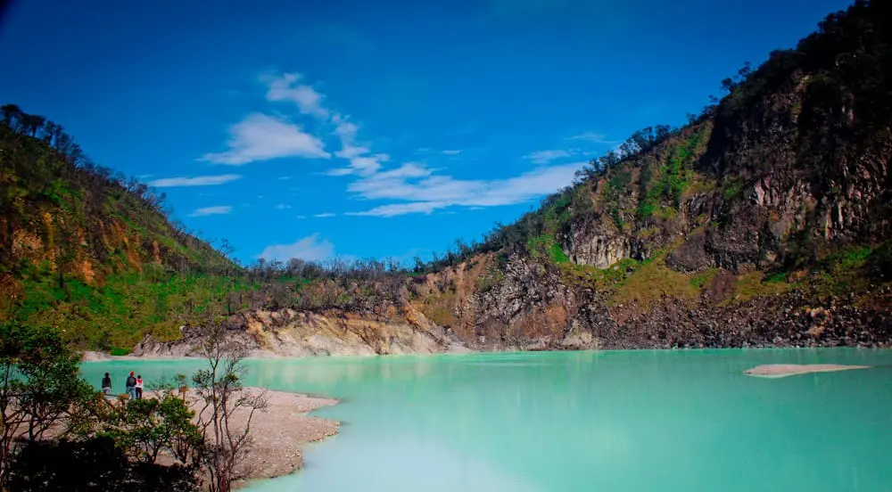

Kawah Ciwidey
Kawah Putih adalah tempat wisata di Ciwidey, Kabupaten Bandung, Jawa Barat. Tempat wisata ini berupa danau yang terbentuk dari letusan Gunung Patuha
Sungguhnya, kawasan Kawah Putih ini adalah kawah Gunung Patuha. Namun, nama ini kurang populer dan wisatawan lebih mengenal dengan sebutan Kawah Putih. Area ini seluas 10 ha di ketinggian kurang lebih 2.400 mdpl. Sehingga, suhu di wilayah kawasan wisata ini cukup dingin berkisar 8 hingga 22 derajat celsius. Kawah Putih merupakan danau yang sangat asam dengan PH sekitar 0,5 - 1,3 . Dengan tingkat keasaman ini, air danau dapat berubah warna dari kebiruan, keputihan, berwarna hijau, atau coklat. Perubahan warna danau ini tergantung sulfur dan suhu atau keadaan oksigen. Sedangkan tanah Kawah Putih berwarna putih
Sungguhnya, kawasan Kawah Putih ini adalah kawah Gunung Patuha. Namun, nama ini kurang populer dan wisatawan lebih mengenal dengan sebutan Kawah Putih. Area ini seluas 10 ha di ketinggian kurang lebih 2.400 mdpl. Sehingga, suhu di wilayah kawasan wisata ini cukup dingin berkisar 8 hingga 22 derajat celsius. Kawah Putih merupakan danau yang sangat asam dengan PH sekitar 0,5 - 1,3 . Dengan tingkat keasaman ini, air danau dapat berubah warna dari kebiruan, keputihan, berwarna hijau, atau coklat. Perubahan warna danau ini tergantung sulfur dan suhu atau keadaan oksigen. Sedangkan tanah Kawah Putih berwarna putih